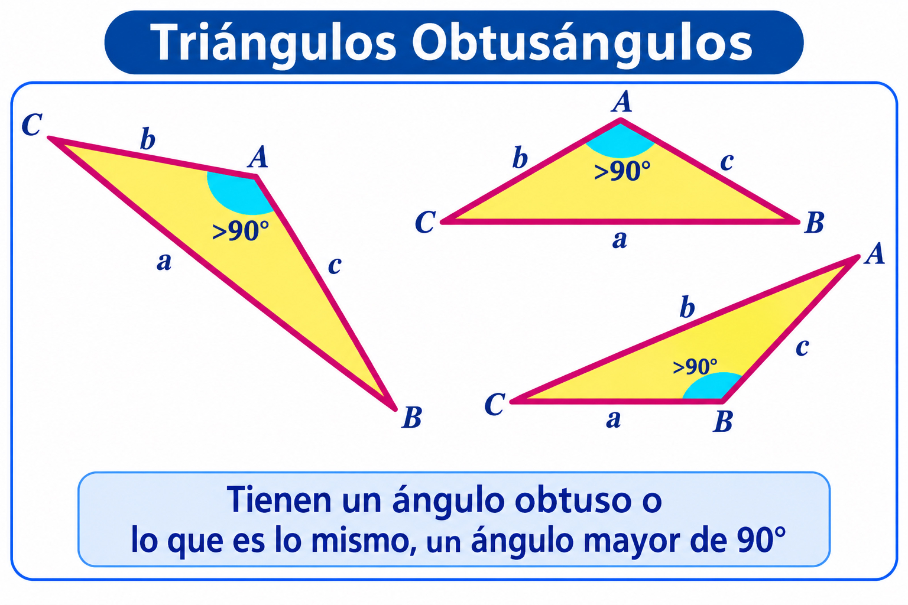

Introducción
Vamos a estudiar qué es un triángulo y las diferentes formas de clasificarlo. Empezaremos diciendo que un triángulo es un polígono que tiene tres lados. También podemos definirlo como el área cerrada por tres rectas. Además de tener tres lados, un triángulo también tiene tres ángulos y tres vértices. Veamos qué es cada uno de ellos:
-
TRIÁNGULO:
-
Lados: tiene tres y son las rectas que forman el polígono.
-
Vértices: tiene tres y son cada uno de los puntos donde se unen dos lados.
-
Ángulos: tiene tres y son las aberturas que se forman al unirse dos lados.
-
Habitualmente los lados de los triángulos suelen representarse con letras minúsculas de la «a» a la «c» mientras que los ángulos siguen la misma nomenclatura solo que en mayúsculas. La imagen siguiente te ayudará mejor a comprender esto:

Los triángulos son los polígonos más sencillos, pero son de gran ayuda para el estudio de las propiedades de otros polígonos más complejos, como por ejemplo, para estudiar sus áreas.
Clasificación de triángulos según sus lados
Existen tres tipos de triángulos según sus lados que son:
-
Triángulo equilátero:
-
Tiene sus tres lados iguales, es decir, los tres lados son de la misma longitud.
-
-
Triángulo isósceles:
-
Tiene dos lados iguales (de igual longitud) y otro no.
-
-
Triángulo escaleno:
-
Tiene los tres lados diferentes, es decir, de distinta longitud.
-
Veamos con imágenes uno a uno.


Clasificación de triángulos según sus ángulos
Existen tres tipos de triángulos según sus ángulos que son:
-
Triángulo rectángulo:
-
Dos de sus lados forman un ángulo recto, o lo que es lo mismo, tiene un ángulo de 90º.
-
-
Triángulo acutángulo:
-
Todos sus ángulos son agudos, o lo que es lo mismo, todos sus ángulos miden menos de 90º.
-
-
Triángulo obtusángulo:
-
Dos de sus lados forman un ángulo obtuso, o lo que es lo mismo, tiene un ángulo de más de 90º.
-
Veamos con imágenes tipo a tipo.



Ampliación: Tipos de rectas que se pueden trazar en un triángulo y sus puntos
Veamos ahora las rectas que se pueden trazar dentro de un triángulo. Estas rectas suelen concurrir todas en un punto y estos puntos, dependiendo de como sean reciben también cada uno un nombre.
Recta: Mediana – Punto: Baricentro
Las medianas de un triángulo son las rectas que unen cada vértice con el centro de su lado opuesto.
El punto de intersección de las medianas recibe el nombre de baricentro.
El baricentro es también el centro de equilibrio de un triángulo.

Recta: Mediatriz – Punto: Circuncentro
Las mediatrices son rectas perpendiculares a los puntos centrales de cada lado.
El punto de intersección de las mediatrices se conoce como circuncentro.
El circuncentro coincide con el centro de la circunferencia que pasa por los tres vértices del triángulo.

Recta: Bisectriz – Punto: Incentro
Las bisectrices de un triángulo son rectas que dividen cada uno de sus ángulos en dos ángulos de la misma medida.
El punto de intersección de las bisectrices se llama incentro.
El incentro permite trazar una circunferencia inscrita en el triángulo que será tangente a todos los lados del triángulo.

Recta: Altura – Punto: Ortocentro
La altura es cada uno de los segmentos perpendiculares que van desde un vértice a su lado opuesto.
El punto donde las tres alturas de un triángulo se cortan se llama ortocentro.